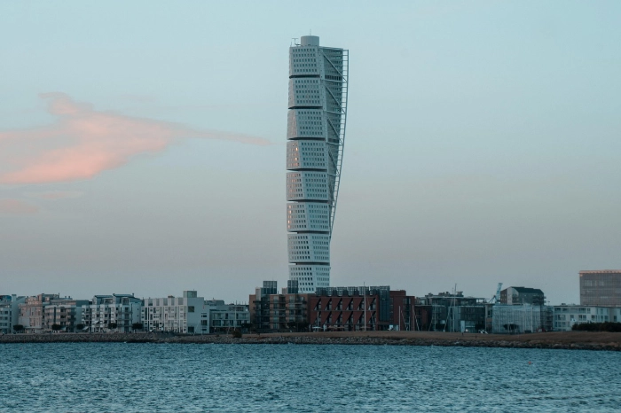
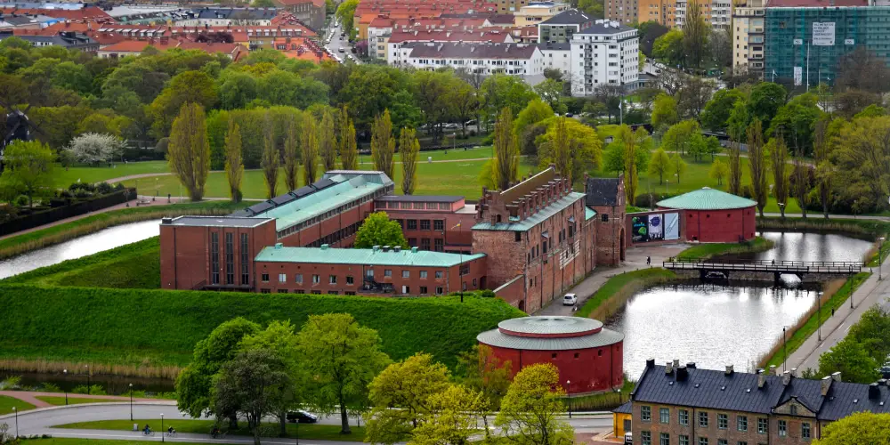

Turning Torso

Malmös mest ikoniska landmärke och Nordens högsta byggnad. Det vridna tornet, designat av Santiago Calatrava, reser sig stolt över Västra Hamnen och symboliserar stadens moderna utveckling. En imponerande syn och ett självklart stopp under vår tur.
Malmöhus slott

Ett praktfullt renässansslott från 1500-talet som idag rymmer Malmö Museer. Här möts historia, konst och natur i en miljö fylld av charm och kultur. Slottet omges av vallgrav och park – en fridfull kontrast till stadens puls.
Lilla Torg

Ett av Malmös mest levande och charmiga platser. Här kantas kullerstenen av korsvirkeshus, restauranger och uteserveringar där stadens hjärta verkligen känns. Perfekt plats att avsluta turen på – kanske med en fika eller middag i den skånska kvällssolen.